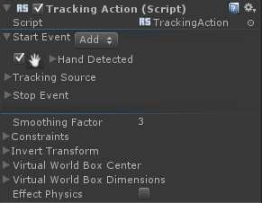
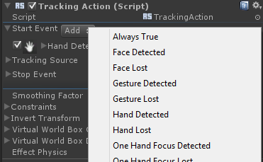
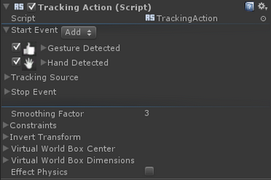
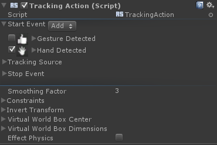
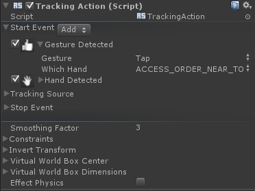
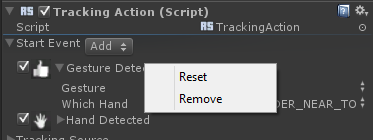

Actions |
Top Previous Next |
|
The Actions are MonoBehavior classes that implement a specific interaction on a Unity game object. Actions use triggers to configure the specific interactions. There are four categories of actions: Predefined Triggers Actions The action triggers are predefined. You can only configure the rules attached to the trigger. This category includes actions where the interaction is tightly coded with a specific trigger such as Rotate Action or Tracking Action. Custom Trigger Actions The action triggers are variable. You can add and remove triggers to the action. This is for more generic actions such as Hide Action or Enable Behavior. Continuous Actions The action implements an interaction that uses continuous flow of data. For example, the Tracking Action uses the location of the tracked object every frame. One-Shot Actions The action implements an interaction that needs to know only when a trigger is fired. For example, the Hide Action disables the renderer of the associated game object whenever the trigger is fired. Action User Interface All actions have similar layout in the Unity Inspector as follows (as illustrated in Figure 85):
You can specify the triggers that are associated with an action. For each trigger, you can add, remove, and configure the rules. Each rule has specific configuration parameters based on the algorithm it implements. For example, the Gesture Detected rule can configure which gesture to detect.
You can perform the following operations in the action UI:
 Figure 85: Action’s UI – Trigger Open
  Figure 86: Action’s UI – The Add Rule Button If more than one rule are attached to a trigger, the rules run sequentially in the order of appearing with OR operand relation among them. This means that if one of the rules fires, the trigger is fired with that rule’s values. For example, in Figure 86, if a gesture has been detected, the Hand Detected rule is ignored.
 Figure 87: Action’s UI – Rule un-checked
 Figure 88: Action’s UI – Rule’s parameters
 Figure 89: Action’s UI – Rule’s context menu
|